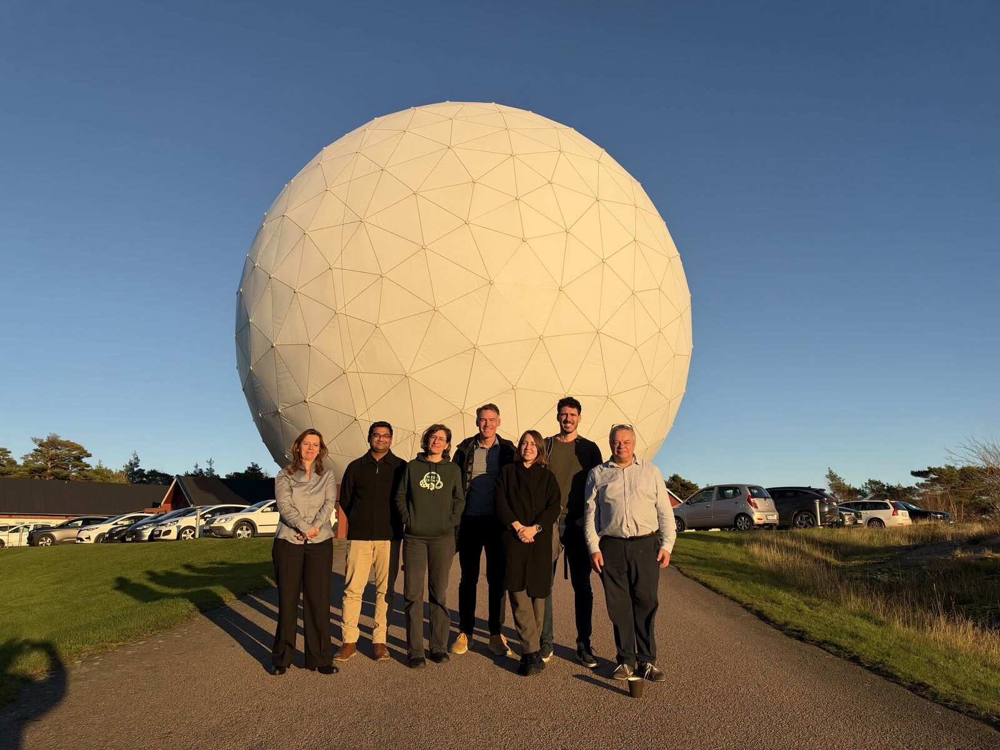

A productive week at Chalmers University of Technology and Onsala Space Observatory for the first face-to-face meeting of the Space Array End-to-End Simulation Working Group!
Great discussions and collaborative work towards developing a common simulation framework to support the scientific and technical development of future space-based mm/sub-mm/FIR interferometers.
Many thanks to our hosts at Chalmers and Onsala!